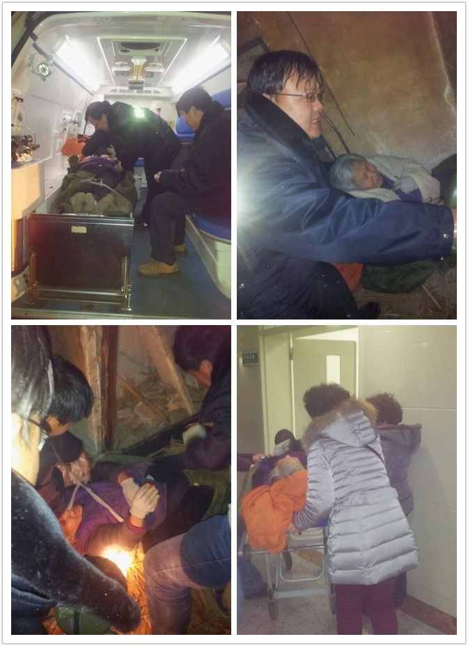

又一例。//@邢波:强拆就在身边。 //@罗念慈:王芳是中欧知识女性的代表，善良坚韧。我们随时过去支持你！//@巫师Wizard: 王芳是中欧EMBA班上的慈善委员，一直致力于社会公益活动。二姐曾经和我们深入西藏阿里地区，捐赠大量书籍给日喀则小学和霍尔小学。没想到强拆事件就发生在我们身边。求转发！@身和灵有一个在路上:求转发！昨日腊月初九天寒地冻。一伙人破门，被子蒙上79岁姑姑的头，将她拖到院中。挖掘机瞬间推倒住了25年的房子，姑姑所有家当悉数埋在预制板下！这发生在青岛崂山钟家沟村真实一幕。老人现在急救，女儿方晓岩13791916693，春节将至，安身何处？吁请市政府做主，严惩凶手，还守法市民安全生存环境！ 